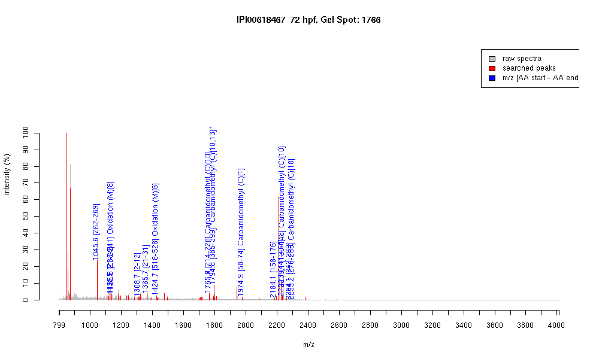

| Name | PREDICTED: similar to zinc finger protein 420 |
|---|---|
| MW | 65734.5 |
| PI | 9.14 |
| Mascot Protein Score | 66 |
| Masses (matched / unmatched) | 11 / 44 |

| Peptide | MZ (calc) | MZ (observed) | Error (DA) | Error (PPM) | Start | Stop | Modifications |
|---|---|---|---|---|---|---|---|
| QYLTEHVR | 1045.5425 | 1045.5649 | 0.0224 | 21 | 262 | 269 | |
| KQHLIGHMR | 1135.6154 | 1135.5781 | -0.0373 | -33 | 233 | 241 | Oxidation (M)[8] |
| QEETEEAFR | 1138.5011 | 1138.546 | 0.0449 | 39 | 21 | 29 | |
| AFIKEESEDIK | 1308.6682 | 1308.665 | -0.0032 | -2 | 2 | 12 | |
| QEETEEAFRVK | 1365.6644 | 1365.6501 | -0.0143 | -10 | 21 | 31 | |
| IHTGEQLYTCQQCGK | 1765.7996 | 1765.7493 | -0.0503 | -28 | 214 | 228 | Carbamidomethyl (C)[10] |
| SHTGDQLYICQQCGK | 1794.7898 | 1794.821 | 0.0312 | 17 | 385 | 399 | "Carbamidomethyl (C)[10,13]" |
| CEGCLDFRSGEESEQTK | 1974.8168 | 1974.9143 | 0.0975 | 49 | 58 | 74 | Carbamidomethyl (C)[1] |
| IHTGEQPYTCQQCGKSF | 2183.9961 | 2184.0623 | 0.0662 | 30 | 158 | 176 | |
| IHTGEKPHTCQQCGKSFT | 2233.031 | 2233.0955 | 0.0645 | 29 | 441 | 460 | |
| IHTGEKPYTCQQCGNSFI | 2239.0383 | 2239.136 | 0.0977 | 44 | 130 | 148 | Carbamidomethyl (C)[10] |
| QYLTEHVR | 1045.5425 | 1045.5638 | 0.0213 | 20 | 262 | 269 | |
| QEETEEAFRVK | 1365.6644 | 1365.657 | -0.0074 | -5 | 21 | 31 | |
| NLTEHMRNHTR | 1424.6812 | 1424.749 | 0.0678 | 48 | 518 | 528 | Oxidation (M)[6] |
| IHTGEQLYTCQQCGK | 1765.7996 | 1765.7576 | -0.042 | -24 | 214 | 228 | Carbamidomethyl (C)[10] |
| SHTGDQLYICQQCGK | 1794.7898 | 1794.8124 | 0.0226 | 13 | 385 | 399 | "Carbamidomethyl (C)[10,13]" |
| CEGCLDFRSGEESEQTK | 1974.8168 | 1974.9034 | 0.0866 | 44 | 58 | 74 | Carbamidomethyl (C)[1] |
| IHTGEQPYTCQQCGKSF | 2183.9961 | 2184.0667 | 0.0706 | 32 | 158 | 176 | |
| IHTGEKPHTCQQCGKSFT | 2233.031 | 2233.0906 | 0.0596 | 27 | 441 | 460 | |
| IHTGEKPYTCQQCGNSFI | 2239.0383 | 2239.1318 | 0.0935 | 42 | 130 | 148 | Carbamidomethyl (C)[10] |
| IHTGEKPYTCQHCGHRF | 2284.061 | 2284.1499 | 0.0889 | 39 | 242 | 260 | |
| IHTGEKPYSCQQCEKSFT | 2299.0593 | 2299.1648 | 0.1055 | 46 | 270 | 288 | Carbamidomethyl (C)[10] |